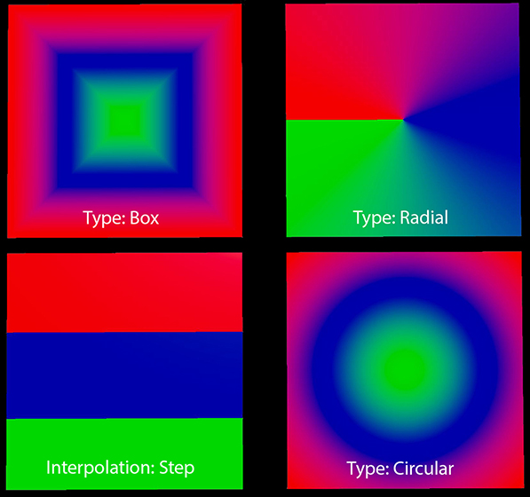

LookdevX for Maya v1.6.0 Release Notes
Release Highlights
OpenPBR
OpenPBR is an open-source shading model jointly developed by Autodesk and Adobe, designed as the successor to Autodesk Standard Surface and Adobe Standard Material. OpenPBR offers enhanced functionality and a more user-friendly experience while also improving interoperability of materials between different CG software.
You can find the OpenPBR surface in a new OpenPBR menu (in the Tab menu), or in the Node Library under OpenPBR.

Publishing Workflows
You can now save compounds to disk for reuse or distribution through the Publishing workflow. Use the new LookdevX Preferences to set User and Global Library paths to control user generated content and content found on disk or network locations.

Ramp Node
The improved Ramp node lets you choose from 3 new types of ramp: Radial, Circular, or Box. A new Step interpolation is available as well.

What's Fixed
| [MTLX] Unable to remove connection if the published compound is missing LOOKDEVX-3404 |
| Closing the tab while publishing compound crash Maya LOOKDEVX-3358 |
| Instances of published compound do not update after reloading the library LOOKDEVX-3388 |
| [MTLX] Crash on replacing invalid connection. LOOKDEVX-3371 |
| Users shouldn't be able to edit or remove connections inside a non-editable node-definition LOOKDEVX-3394 |
| [MTLX] Unable to remove connection if the published compound is missing LOOKDEVX-3209 |
| Users shouldn't be able to edit the name of the nodes inside a non-editable node-definition LOOKDEVX-3393 |
| LookdevX preferences option should not be greyed on welcome screen LOOKDEVX-3392 |
| Promoting ports on a published compound crash Maya LOOKDEVX-3363 |
| User cannot solo USD Open_PBR node LOOKDEVX-3361 |
| LookdevX plugin blocks the bulk renaming workflow LOOKDEVX-3360 |
| [USD] Hide utility nodes that use "ldx_hide" on the MaterialX side LOOKDEVX-3321 |
| [MTLX] Cannot correctly connect to inputs of functional node graphs. LOOKDEVX-3262 |
| [MTLX] Exporting a document that's part of the search path doesn't work correctly. LOOKDEVX-3256 |
| [Publishing] View definition crash Maya LOOKDEVX-3243 |
| Importing the published compound under the MaterialX Stack comes empty LOOKDEVX-3223 |
| Published compounds does not render with Arnold LOOKDEVX-3221 |
| [USD] Silence the warnings on the USD OpenPBR node LOOKDEVX-3216 |
| [MTLX] LookdevX node library should try harder to provide nice UI names LOOKDEVX-3215 |
| [USD] LookdevX node library should try harder to provide nice UI names LOOKDEVX-3214 |
| MTLX LOOKDEVX-3212 |
| [MTLX] Soloing a node inside a node def preview crashes Maya LOOKDEVX-3208 |
| [Mtlx] Performance issue with viewing node definition LOOKDEVX-3203 |
| User cannot solo USD Open_PBR node LOOKDEVX-3185 |
| OpenPBR LOOKDEVX-3144 |
| LookdevX LOOKDEVX-3122 |
| [Typeless] Wrong UI widget in adsk_converter (MaterialX) LOOKDEVX-3114 |
| LookdevX plugin blocks the bulk renaming workflow LOOKDEVX-3085 |
| Cut/Copy/Paste Functionality Fails Without Outliner Selection LOOKDEVX-3046 |
| [Ramp] Node Port Remains After Deleting Gradient Control Point LOOKDEVX-3019 |
| [Ramp] Color Picker Preview doesn't refresh while using channel sliders LOOKDEVX-2956 |
| [Ramp] Using eye-dropper tool breaks the gradient display LOOKDEVX-2832 |
| Ramp color picker swatches does not get selected on single click LOOKDEVX-2687 |
Known Limitations
| Referencing Compounds in a USD stage will crash Maya EMSUSD-1616 |
| Texture paths are missing when instancing a Compound that was published with hardcoded textures paths. Publishing with hardcoded texture paths should be avoided. LOOKDEVX-3222 |
| Ports inside the functional node graph of an instanced compound cannot be promoted LOOKDEVX-3269 |
| Re-ordering or renaming tabs does not trigger dirty scene. LOOKDEVX-1431 |
| Compounds with a promoted Color port will not render in Arnold correctly. As a workaround, add a MaterialX node between the Input node, and the Surface node. This affects surface shader nodes. MTOA-2109 |
| Publishing: Setting the Global Libraries path to a random folder may pick up files that it should not be loading. |
| Publishing Compounds on a Mac may require setting permissions on the default folder to allow published compounds to be written to disk. |